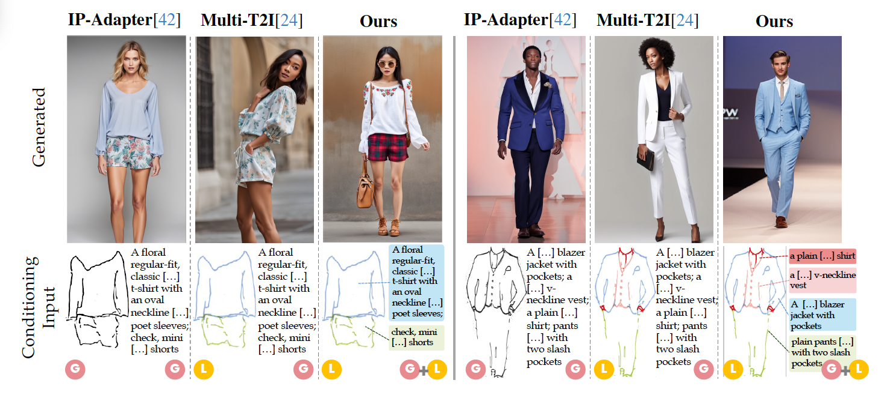
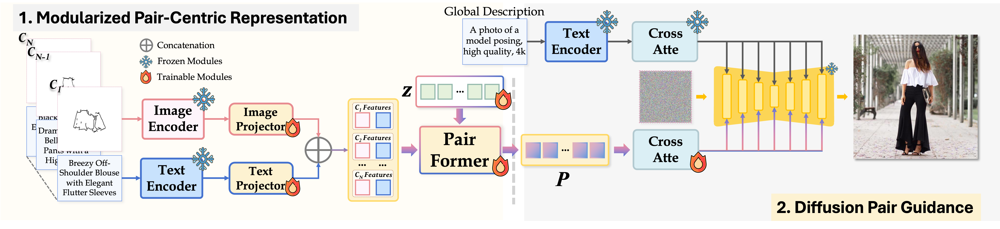

Localized sketch-text image generation
Advancing state-of-the-art conditioning with multiple localized sketch-text pairs and a global description.
Fashion design is a complex creative process that blends visual and textual expressions. Designers convey ideas through sketches, which define spatial structure and design elements, and textual descriptions, capturing material, texture, and stylistic details.
In this paper, we present LOcalized Text and Sketch (LOTS), an approach for compositional sketch-text based generation of complete fashion outlooks. LOTS leverages a global description with paired localized sketch + text information for conditioning and introduces a novel multistep-based merging strategy for diffusion adaptation. First, a Modularized Pair-Centric representation encodes sketches and text into a shared latent space while preserving independent localized features; then, a Diffusion Pair Guidance phase integrates both local and global conditioning via attention-based guidance within the diffusion model's multi-step denoising process.
To validate our method, we build on Fashionpedia to release Sketchy, the first fashion dataset where multiple sketch-text pairs are provided per image. Quantitative results show LOTS achieves state-of-the-art image generation performance on both global and localized metrics, while qualitative examples and a human evaluation study highlight its unprecedented level of design customization.
In fashion design, sketches and natural language descriptions associated with the same garment convey complementary information for depicting the final design. As a complete outlook design is composed of several clothing garments, multiple descriptions are often collected together to outline an outfit. Each sketch-text pair specifies a localized part of design, in terms of silhouette shapes, materials, and textual details, allowing fine-grained localized control over the generation.
We frame this problem as a conditional image generation task, where the conditioning consists of a set of localized sketch-text pairs. LOTS is designed to enable fashion image generation with an unprecedented level of localized control.
 Figure 1: Fundamental difference between previous methods and our approach. LOTS represents the natural evolution of fashion design methodologies, progressing from global text and sketches (IP-Adapter) to localized sketches with global text (Multi-T2I). Our approach leverages a global description (omitted here for brevity) alongside a set of localized sketch-text pairs (the coloured boxes), effectively defining both the layout and appearance of individual garment items.We propose LOTS, a novel approach leveraging multiple localized sketch-text pairs for image conditioning.
The Modularized Pair-Centric Representation module independently encodes sketches and text into a shared latent space, preserving localized semantics and minimizing cross-pair information leakage. The Pair-former then integrates sketch and text features within each pair, enabling spatially grounded alignment and accurate modeling of fine-grained, instance-specific attributes through sketch-informed structural guidance.
The localized representations are fed as conditioning inputs to a pre-trained diffusion model, alongside a global textual representation specifying general appearance properties (style, background). Our approach defers this operation to the diffusion process itself, breaking down the task across multiple denoising steps via a cross-attention strategy.
Starting from whole-body item (light colors) and garment parts (dark shades) annotations, we build a hierarchical structure by pairing the garment-part annotations to their related whole-body garment. We then use this structure to generate garment-level sketches and natural language descriptions with off-the-shelf models.

Evaluating Attribute Confusion in Fashion Text-to-Image Generation.
Translating the Abstract Language for Vision Language Models.
AI-Driven Intelligent Diagnostics and Analytics in Healthcare.
This study was supported by LoCa AI, funded by Fondazione CariVerona (Bando Ricerca e Sviluppo 2022/23), PNRR FAIR - Future AI Research (PE00000013) and Italiadomani (PNRR, M4C2, Investimento 3.3), funded by NextGeneration EU. This study was also carried out within the PNRR research activities of the consortium iNEST (Interconnected North-Est Innovation Ecosystem) funded by the European Union Next-GenerationEU (Piano Nazionale di Ripresa e Resilienza (PNRR) – Missione 4 Componente 2, Investimento 1.5 – D.D. 1058 23/06/2022, ECS_00000043). This manuscript reflects only the Authors’ views and opinions. Neither the European Union nor the European Commission can be considered responsible for them. We acknowledge the CINECA award under the ISCRA initiative, for the availability of high-performance computing resources and support. We acknowledge EuroHPC Joint Undertaking for awarding us access to MareNostrum5 as BSC, Spain. Finally, we acknowledge HUMATICS, a SYS-DAT Group company, for their valuable contribution to this research.
@inproceedings{girella2025lots,
author = {Girella, Federico and Talon, Davide and Lie, Ziyue and Ruan, Zanxi and Wang, Yiming and Cristani, Marco},
title = {LOTS of Fashion! Multi-Conditioning for Image Generation via Sketch-Text Pairing},
journal = {Proceedings of the International Conference on Computer Vision},
year = {2025},
}